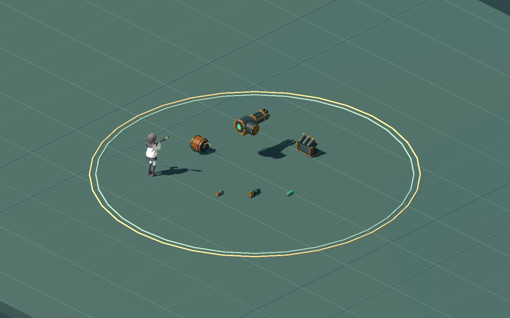

WITCH / FIREARM MATERIALS / 04
나머지 여섯 자산도 같은 재질로
화약통의 목재와 심지, 기관포·연막발사기의 금속과 남색 도장, 포탄과 연막탄의 식별 도장을 다듬었습니다. 아래 개별 사진은 확대 보기이며, 버튼으로 같은 조명에서 이전 재질과 비교할 수 있습니다.

후속 스킬 연결용 자산의 작동 예시입니다. 기존 조립·회전·굴림·심지 소모·분리 움직임을 새 재질로 확인합니다.
캐릭터 옆에서 보는 크기

원래 크기의 자산을 게임 조명과 카메라에 정적으로 배치한 참고 화면입니다. 세 총은 선택한 v3로 유지되며, 이 여섯 자산의 신규 스킬 판정·효과 구현은 별도입니다.
원본과 검증
107개 독립 부품 / 28,640삼각형. 원본 형상·노멀·회전축·소켓 보존. 공통 1K 색/노멀 + 512 ORM + 256 발광 텍스처. 저장 원본과 재반입 QA 및 전체 UV 교차 검사 통과. 재질·리소스·동작 검사 746개, GPU 캡처 239장.
정적 캡 n-gon, 공중 모델의 원점 높이, UV/노멀 경계 중복 정점은 유지했습니다. 고정 마모 표현이며 실제 충돌 물리·연막 규칙·최종 성능 검증은 아닙니다.
편집 원본 안내 · 전체 화기 자산 목록 · 검증 기록 · 선택한 세 총